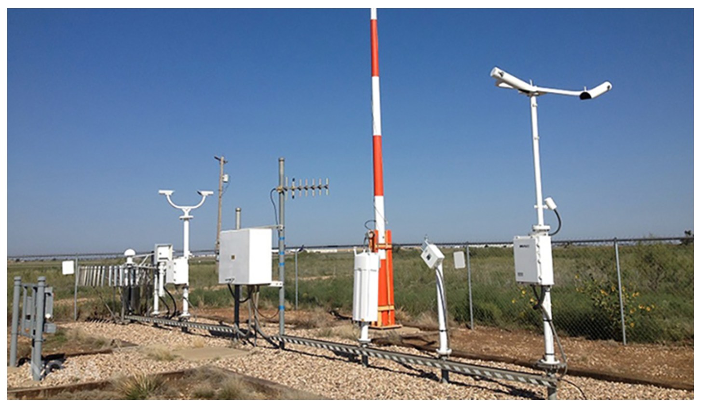
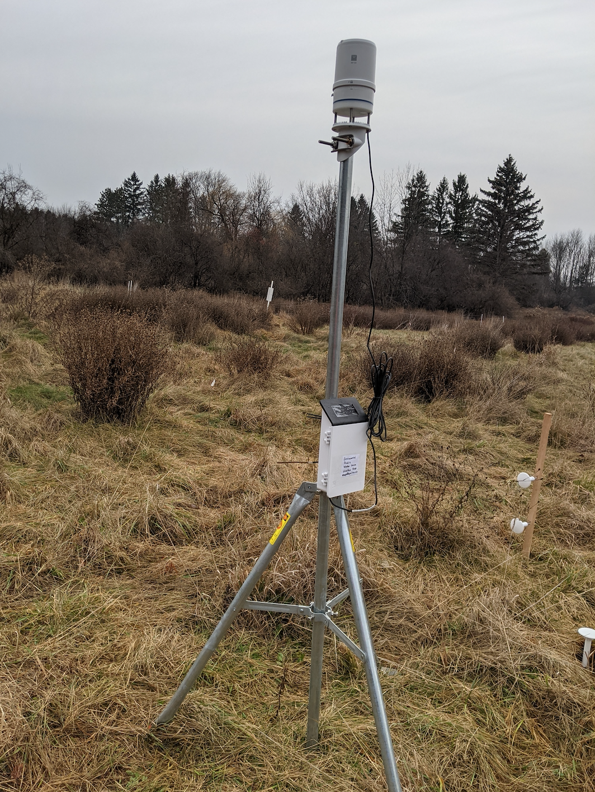
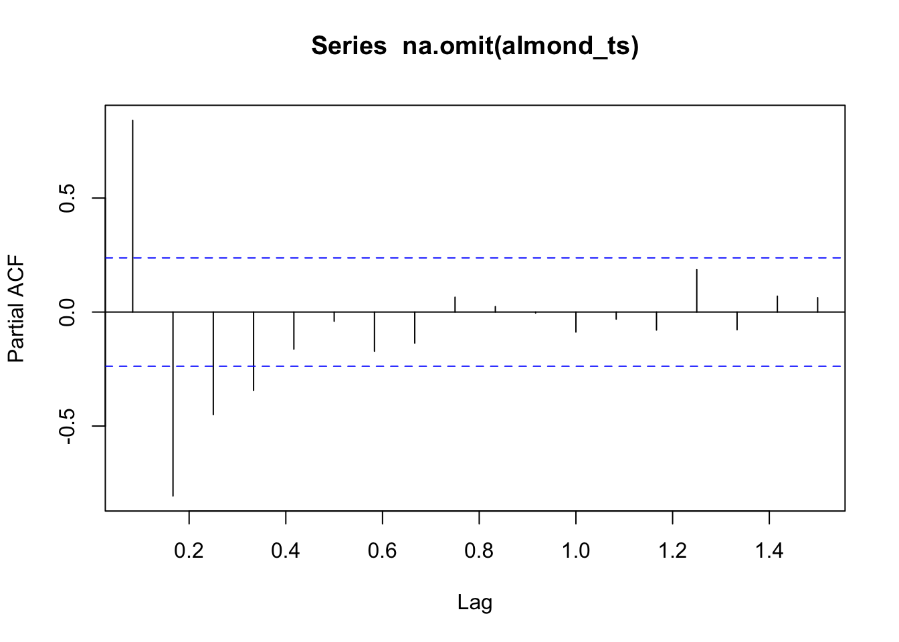

Chapter 5 When it rains, it pours. An introduction to data cleaning.
by Heather Kropp for ENVST 325: Introduction to Environmental Data Science Hamilton College
5.1 Learning objectives
- Flag and identify problematic data
- Create protocols to check data and generate error messages
- Work with automated weather data
5.3 The problem: ensuring reliable data
5.3.1 Sensors for weather and microclimate
Sensors collect a wide array of observations about the environment. There are two many types of sensors to cover throughout this course designed to measure soils, oceans, surface conditions, and the atmosphere. Weather observations are critical for generating warnings in advance of extreme weather events, forecasting future conditions, and understanding the influence of weather on plant growth for agricultural and natural ecosystems. Governmental organizations like the National Weather Service and National Oceanic and Atmospheric Administration manage weather stations throughout the country to make observations available to both experts and the general public.

An automated weather observing system for a municple airport. Source: NOAA
There are two main components to sensor data collection:
5.3.1.0.1 1. sensor: relates an electrical or chemical property to the conditions of the physical environment (e.g. change in voltage or resistance).
5.3.1.0.2 2. datalogger: records and stores the data. Programs adjust the interval of data records and the nature of each record (e.g. averaged over interval versus value at time of observation).
The large observing stations from organizations like NOAA (pictured above) produce highly accurate data necessary for meteorological observations, but are costly to maintain. This means that observations can be many miles apart and miss critical conditions that vary from the location of observation. The microclimate refers to the climate of a specific area that differs from the surrounding area. This means that the air temperature, humidity, precipitation, and solar radiation can all differ from the surrounding area. Microclimate is influenced by topography, vegetation, soil, human infrastructure, and surface water. For example, if you walk across campus on a hot, summer day you will notice a drop in temperature and sunlight as you go from the sidewalks onto the glen path. This is due to the canopy shading and evapotranspiration of the trees and creeks in the glen compared to the lawns and build surfaces of the main campus. The concept of microclimate is increasingly becoming important for ventures like precision agriculture where farmers try to customize irrigation and fertilization based on the needs of the field. Microclimate is also critical for understanding diversity and ecosystem function. Small, inexpensive sensors enable measurements of microclimate that will not be characterized by weather stations miles away. The microclimate weather station on campus will help evaluate the meterological conditions for the planted trees and support a number of student research projects. However, these less accurate sensors require users to maintain good data practices and may not always be able to capture all meteorological conditions. Each sensor will depend on the specifications outlined by the manufacturer. Below is an example of an all-in-one weather station. These stations are easy to install and maintain, but sensors like precipitation, air temperature, and solar radiation can be subject to measurement issues that affect reliability.

An low-moderate accuracy all-in-one weather station installed on a reforestation plot on the Hamilton campus
5.3.2 Problematic data
Sensors and dataloggers can break or experience quality issues related to malfunction or environmental conditions outside of their capacity. Quality assurance and quality control (QA/QC) are measures to ensure the reliability and accuracy of data. A large part of quality assurance involves checking the sensors that collect data and considering the conditions for operation outlined by the sensor manufacturer. Quality control encompasses the measures taken to ensure quality and remove problematic data. For large organizations like NOAA, QA/QC is conducted before data sharing. However, not all data providers may conduct QA/QC or you may be part of the initial data collection. Data cleaning refers to the measures taken to remove unreliable, corrupted, or incorrect data.
5.3.3 The data
You will work with the data collected from the reforestation weather station at Hamilton College. The all-in-one station (ATMOS 41 made by Meter Environment) is an affordable, easy to maintain system. A full manual can be found for the ATMOS 41. Note that there are some quality control measures built into the data logger described by the manual. There are 3 data files: campus_weather.csv contains the data observations. The METER data logger will automatically flag missing or problematic observations filtered by the data logger with a #N/A. It is not uncommon for data loggers to have their own form of NA. You can use the na.strings argument to specify how NAs are formatted in the data and R will automatically convert them to a NA.
Date SolRad Precip LightningAct LightningDist WindDir WindSpeed
1 12/11/20 14:30 98.2 0 0 0 88 1.07
2 12/11/20 14:45 106.9 0 0 0 131 0.86
3 12/11/20 15:00 109.4 0 0 0 110 0.77
4 12/11/20 15:15 77.3 0 0 0 15 1.24
5 12/11/20 15:30 55.0 0 0 0 8 1.28
6 12/11/20 15:45 47.2 0 0 0 2 0.92
GustSpeed AirTemp VaporPr AtmosPr XLevel YLevel MaxPrecip RHSensorTemp VPD
1 3.39 10.5 0.626 98.31 -1.2 0.8 0 12.0 0.64
2 2.65 10.3 0.641 98.32 -1.3 0.7 0 11.3 0.61
3 2.64 10.4 0.654 98.33 -1.4 0.8 0 10.9 0.61
4 3.76 10.5 0.663 98.35 -1.4 0.7 0 10.8 0.60
5 3.15 10.1 0.660 98.38 -1.3 0.8 0 10.4 0.57
6 2.24 9.6 0.661 98.39 -1.3 0.8 0 9.9 0.53
BatPct BatVolt RefPr LogTemp
1 99 7798 98.27 14.6
2 99 7797 98.26 12.6
3 99 7797 98.26 11.7
4 100 7801 98.27 11.2
5 99 7798 98.30 10.4
6 99 7798 98.31 9.6The meter_weather_metadata.csv file has units and description for each column name in weather_station:
name description units
1 Date date/time MM/DD/YYYY HH:MM
2 SolRad solar radiation W/m^2
3 Precip precipitation mm
4 LightningAct lightning strikes <NA>
5 LightningDist lightning distance km
6 WindDir wind direction degreeThe Sensor log.csv file has notable issues around the installation and maintenance of the weather station. A long gap occurred during a time when a student worker regularly checked on the station from Feb-May, but had no issues to note.
Date
1 12/11/20
2 12/12/20
3 12/19/20
4 7/1/20
Notes
1 Installed
2 Fixed station mounting and got more level and fixed direction.
3 Realized station was unplugged. Fixed.
4 It has become clear that the delay in bird spike shipping has resulted in accumulation of excrement in the bucket of the rain sensor. Sensor was taken down for cleaning.You will also want to load dplyr, lubridate, and ggplot2 to your project:
There are a few downsides to the current system that can affect the data:
5.3.3.0.1 1. There is no heated precipitation sensor. This means that frozen precipitation will not be accurately measured and accumulation can prevent liquid precipitation from being measured until melt.
5.3.3.0.2 2. Air temperature in an all-in-one does have the traditional solar radiation shield of louvered plates that allow for air circulation. High accuracy air temperature measurements will also use a fan to aspirate the air around the sensor. Corrections are automatically applied to account for the sensor lacking these features based on wind and solar radiation.
5.4 Cleaning data
5.4.1 Removing unreliable data
Some data may be considered so unreliable that it cannot be used. The best option for this type of situation is to convert the data to a NA.
Let’s look at an example with the clogging of the precipitation sensor by bird excrement. It would be best to use another nearby weather station to verify that rainfall was not accurately measured. Unfortunately the closest weather station is in Rome NY which can get slightly different weather systems. A simple visual check can verify if the data looks abnormal. Let’s parse the date create a day of year column (doy) so that you can make a plot of just the warm season around this issue:
# parse date
weather$dateF <- mdy_hm(weather$Date)
# create a month column
weather$doy <- yday(weather$dateF)
# create a year column
weather$year <- year(weather$dateF)
# examine precipitation using a bar plot
ggplot(data=weather[weather$doy > 121 & weather$doy < 274 ,],
aes(x=dateF,
y=Precip))+
geom_col(color="royalblue4")+
theme_classic()Warning: Removed 479 rows containing missing values or values outside the scale range
(`geom_col()`).
This doesn’t look reassuring. Between the visual assessment of the sensor (I will spare you the picture) and the fact that we don’t see very large (> 3 mm) or trace events in the graph, there is compelling information that the precipitation data was not reliable throughout May and June.
Let’s look at converting the data to an NA with ifelse. function. There are 3 main arguments: the first is the statement to evaluate, the second is the value if true, and the third is the value if the statement false.
Let’s convert the precipitation in May and June to NA. May 1st may be going further back before the problem, but it was also the last time that a student checked on the weather station and verified everything was running properly.
5.4.2 Creating flags
Flags provide additional clauses or information about the quality of an observations without removing it. They often indicate to a user that caution should be used in comparison with other data or the user should do additional checks for issues. They are often specific character or number codes that the user can find in metadata.
Let’s look at creating a flag for frozen precipitation using ifelse. A numerical flag would be a good option with 0 indicating no issue and 1 indicating the potential for freezing precipitation. Let’s flag all observations where the air temperature is at freezing for a start:
5.4.3 Creating functions to check data
Whether you are a data producer or user, it is always a good idea to have proper data protocols for checking that the data is as you expect. It is often helpful to develop your own functions for checking data. You can then refer back to these functions without having to rewrite code. We’ll learn to make a function by doing a routine check of date/time intervals.
One of the fundamental indicators of issues with data can be seen in the regular intervals of date/time data. The campus weather station records data every 15 minutes. An irregularity in the interval can indicate many problems: daylight savings issues, battery power issues, drift in the data logger clock. A good first test of data is to check for regularity in intervals. You can set up a type of data called a time interval using the lubridate syntax %--%. The int_length function then uses an interval data format to calculate the interval length in seconds.
#interval data: look at first 2 observations as interval
# Time 1 %--% Time 2
weather$dateF[1] %--% weather$dateF[2][1] 2020-12-11 14:30:00 UTC--2020-12-11 14:45:00 UTC# look at the interval length from the first to the second observation:
int_length(weather$dateF[1] %--% weather$dateF[2])[1] 900You can see the length is 900 seconds (15 mins * 60 seconds).
However, you will want to check that this is consistent for the entire data. We know that an interval compares 2 time periods so we can only have a total of number of rows minus one intervals. In R, you can remove specific rows by using the - sign and the usual bracket notation. For this comparison, the ending observation in the date column can’t be compared to a second later date and the starting row has no prior date. The length function is useful because it gives you the total number of observations in a vector. We will want to remove them in setting up the intervals:
# set up intervals
intervals <- weather$dateF[-length(weather$dateF)] %--% weather$dateF[-1] # start date %--% end date
# interval starts with row 1, and row 2
# and ends on second to last row and final rowYou can then check all interval lengths that aren’t equal to 900:
# calculate interval times
interval_times <- int_length(intervals)
# check interval times
intervals[interval_times != 900] [1] 2021-03-14 05:15:00 UTC--2021-03-14 06:30:00 UTC
[2] 2021-07-06 14:15:00 UTC--2021-07-06 14:45:00 UTC
[3] 2021-07-15 00:15:00 UTC--2021-07-15 00:15:00 UTC
[4] 2021-08-19 00:15:00 UTC--2021-08-19 00:15:00 UTC
[5] 2021-09-22 09:15:00 UTC--2021-09-22 10:15:00 UTC
[6] 2021-10-23 00:00:00 UTC--2021-10-23 05:15:00 UTC
[7] 2021-10-23 09:15:00 UTC--2021-10-23 10:30:00 UTC
[8] 2021-10-23 12:15:00 UTC--2021-10-23 13:15:00 UTC
[9] 2021-10-23 16:15:00 UTC--2021-10-24 08:15:00 UTC
[10] 2021-10-24 09:30:00 UTC--2021-10-24 10:45:00 UTC
[11] 2021-10-24 11:00:00 UTC--2021-10-24 11:30:00 UTC
[12] 2021-10-24 11:30:00 UTC--2021-11-02 15:45:00 UTC
[13] 2021-11-07 03:30:00 UTC--2021-11-07 02:45:00 UTC!! There are a few issues here!! It looks like something happens on daylight savings. There are also some large gaps in areas of maintainence or battery voltage issues. We also didn’t specify that the timezone and it is assuming that the data is in the UTC timezone. This is not accurate for this sensor and we will explore these issues further in class and homework.
You would like to automate this function so you can use it for other data and when you get new weather station data. function allows you to create your new function. Anything on the left of the arrow is the name of your function. Arguments that will be specified by the user are given in paranthesis. Anything in the curly brackets {} is calculated in the function. The arguements need to used as written in the paranthesis.
#create function for checking for irregular intervals that
# deviate from 900 seconds
# only argument is x, a vector of POSIXct formatted dates to be checked
# with an expected interval of 900 seconds
# the output is all observations that deviate from 900 seconds
timeCheck900 <- function(x){
intervals <- x[-length(x)] %--% x[-1]
interval_times <- int_length(intervals)
intervals[interval_times != 900]
}
# run on weather data
timeCheck900(weather$dateF) [1] 2021-03-14 05:15:00 UTC--2021-03-14 06:30:00 UTC
[2] 2021-07-06 14:15:00 UTC--2021-07-06 14:45:00 UTC
[3] 2021-07-15 00:15:00 UTC--2021-07-15 00:15:00 UTC
[4] 2021-08-19 00:15:00 UTC--2021-08-19 00:15:00 UTC
[5] 2021-09-22 09:15:00 UTC--2021-09-22 10:15:00 UTC
[6] 2021-10-23 00:00:00 UTC--2021-10-23 05:15:00 UTC
[7] 2021-10-23 09:15:00 UTC--2021-10-23 10:30:00 UTC
[8] 2021-10-23 12:15:00 UTC--2021-10-23 13:15:00 UTC
[9] 2021-10-23 16:15:00 UTC--2021-10-24 08:15:00 UTC
[10] 2021-10-24 09:30:00 UTC--2021-10-24 10:45:00 UTC
[11] 2021-10-24 11:00:00 UTC--2021-10-24 11:30:00 UTC
[12] 2021-10-24 11:30:00 UTC--2021-11-02 15:45:00 UTC
[13] 2021-11-07 03:30:00 UTC--2021-11-07 02:45:00 UTC5.5 Conclusion
Data cleaning is an important step for data producers and users. As a data user, it is important to check that the data meets your expectations. In addition to the functions you learned here, data cleaning often uses similar functions to data wrangling. The main difference is that you are ensuring the reliability of data for analysis and sharing not just organizing or formatting.
The homework will continue to explore the data cleaning process using the Hamilton weather station. You can see from the data overview section that there are a number of quality issues to check.